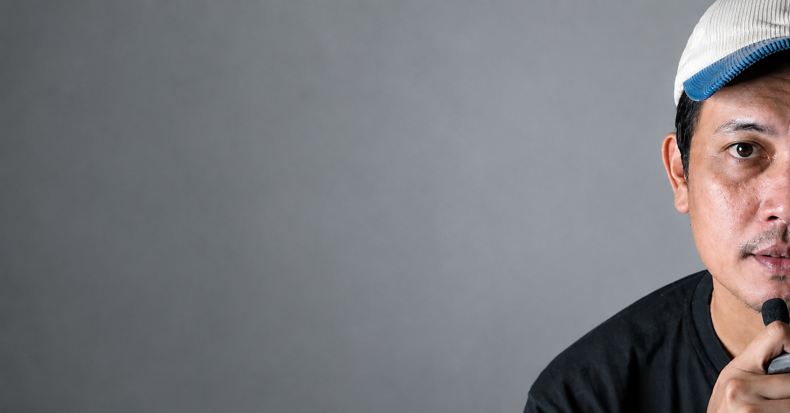

Independent writer exploring Indonesia, internet culture, and modern life through stories, observations, and commentary.

A writer and digital creator based in Indonesia. I write about internet culture, social change, technology, creator economy, and the everyday experiences that shape modern life. Most of my work starts with a simple question: what are we all noticing, but rarely talking about?
Stories and observations from one of the world's most dynamic countries.
How memes, platforms, and online communities shape behavior.
Work, family, technology, and the changing everyday experience.
Building audiences, attention, and trust in a digital world.
A look at how local culture shapes online conversations and comedy.
Attention is valuable—but it comes with trade-offs most creators ignore.
Lessons about focus, priorities, and modern digital life.
“I don't write to sound smart.
I write so people feel they're not the only one thinking about it.”
Open to collaborations, media opportunities, creator partnerships, and meaningful conversations.
@GKuswaya